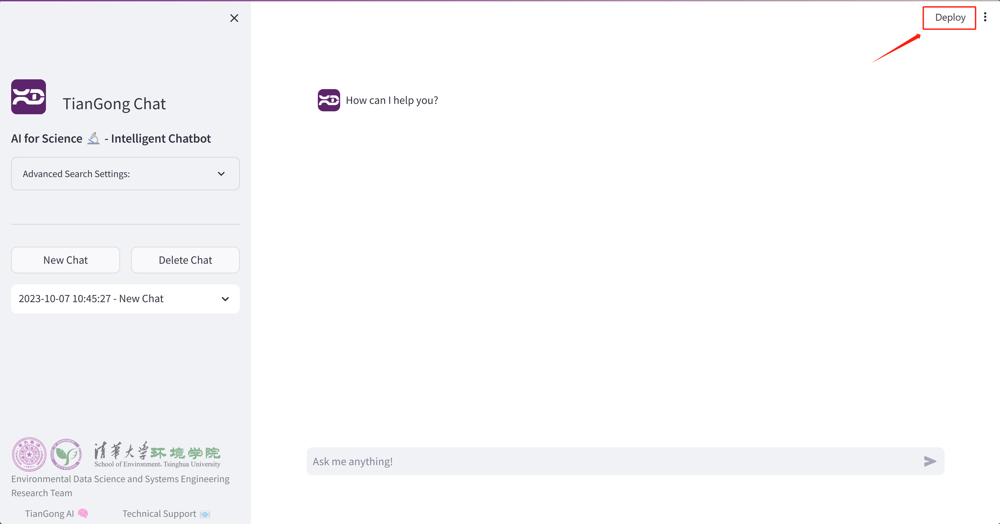
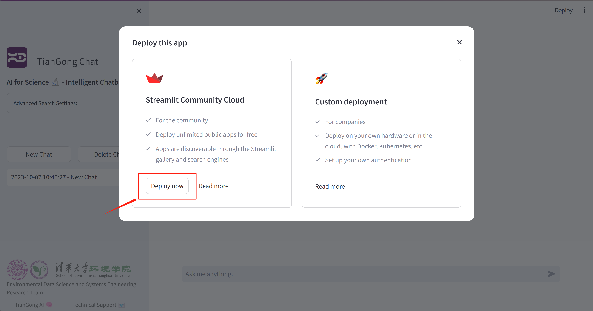
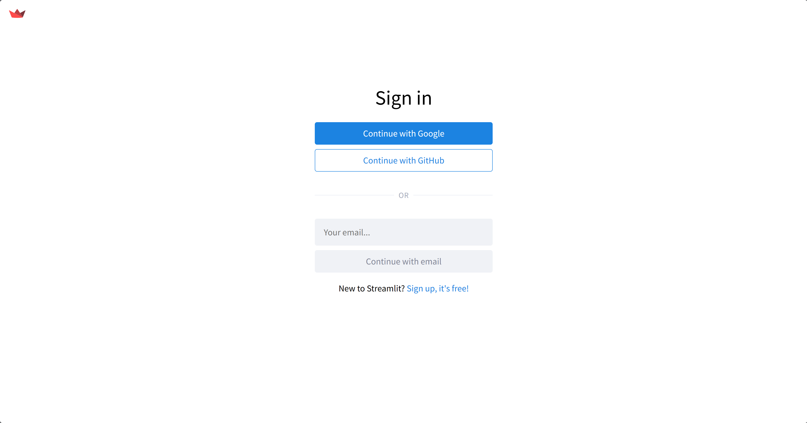
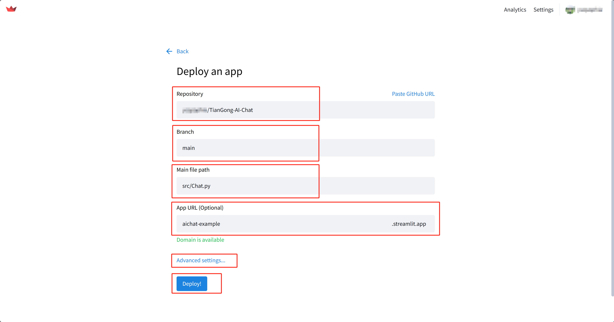

Launch and Deploy#
Launch#
Chat (with Streamlit)#
1. Via VSCode UI:
Open the Run and Debug sidebar by clicking on its icon in the left pane or pressing Ctrl+Shift+D.
From the dropdown at the top, select “Chat”.
Press the green “Run” arrow button next to the dropdown to start the Streamlit app.
2. Command Line (Within VSCode Terminal):
Press ``Ctrl+` `` to open the terminal in VSCode.
Navigate to the root directory of your project.
Run the command:
streamlit run src/Chat.py
Post-Launch:
Upon successfully launching the Streamlit app, your default web browser should automatically open, displaying the TianGong AI Chat interface. If it doesn’t, you can manually navigate to http://localhost:8501 in your web browser to access the application. Here, you’ll be able to interact with the chatbot, input queries, and view responses based on your previous customizations.
FastAPI#
1. Via VSCode UI:
Open the Run and Debug sidebar by clicking on its icon in the left pane or pressing Ctrl+Shift+D.
From the dropdown at the top, select “FastAPI”.
Press the green “Run” arrow button next to the dropdown to start the FastAPI server.
2. Command Line (Within VSCode Terminal):
Press ``Ctrl+` `` to open the terminal in VSCode.
Navigate to the root directory of your project.
Run the command:
uvicorn src.main:app --reload
Post-Launch:
After starting the FastAPI server, it will begin listening for incoming requests. By default, you can access the FastAPI documentation and test endpoints by visiting http://localhost:8000/docs in your web browser. This documentation interface, powered by Swagger, allows you to test API routes, view schemas, and understand the server’s capabilities in detail.
Deploy#
Streamlit#
Streamlit offers a seamless way to deploy your applications directly from the platform. This deployment method is straightforward and swift, making it ideal for fast prototyping or immediate usage.
Here’s how you can do it:
Initiate Deployment:
After running or launching the application, click on the “Deploy” button located in the top right corner.
Start Deployment:
Click on the “Deploy now” button.
Streamlit Account:
If you’re not already logged in, you’ll be prompted to sign up or log into your Streamlit account.
App Deployment Settings:
Here, you’ll provide details about your app’s source and configuration.
Consider setting a more memorable URL, such as aichat-example.streamlit.app.
Advanced Settings:
Navigate to the advanced settings section.
Python version: Ensure the Python version is set to 3.11.

Set Secrets: In the “Secrets” section, input the contents of
.streamlit/secrets.tomlinto the blue box and then click “Save”.
Finalize Deployment:
Click on the “Deploy” button to complete the process. Once done, your TianGong AI Chat is live and accessible to users worldwide!
Docker#
Docker provides a more robust method of deployment suitable for production use. Below is the step-by-step process to deploy TianGong AI Chat using Docker:
Note
The steps provided are for illustrative purposes. Always adapt these steps according to your deployment environment and specific requirements. Replace placeholders like [your-dockerhub-username], [version-tag], [YourDeploymentURL], and [YourEmailAddress] with your specific values when implementing the steps.
Docker Image Building#
Build the Docker image:
docker build -t [your-dockerhub-username]/tiangong-ai-chat:[version-tag] .
Push the built image to DockerHub:
docker push [your-dockerhub-username]/tiangong-ai-chat:[version-tag]
Production Deployment#
Create a dedicated Docker network:
docker network create tiangongbridge
Install and manage the nginx service:
sudo apt update sudo apt install nginx sudo nginx sudo nginx -s reload sudo nginx -s stop
Set up the nginx-proxy for reverse proxying:
docker run --detach \ --name nginx-proxy \ --restart=always \ --publish 80:80 \ --publish 443:443 \ --volume certs:/etc/nginx/certs \ --volume vhost:/etc/nginx/vhost.d \ --volume html:/usr/share/nginx/html \ --volume /var/run/docker.sock:/tmp/docker.sock:ro \ --network=tiangongbridge \ --network-alias=nginx-proxy \ nginxproxy/nginx-proxy:latest
Deploy the nginx-proxy ACME companion for SSL certificate handling:
docker run --detach \ --name nginx-proxy-acme \ --restart=always \ --volumes-from nginx-proxy \ --volume /var/run/docker.sock:/var/run/docker.sock:ro \ --volume acme:/etc/acme.sh \ --network=tiangongbridge \ --network-alias=nginx-proxy-acme \ nginxproxy/acme-companion:latest
Launch TianGong AI Chat:
docker run --detach \ --name tiangong-ai-chat \ --restart=always \ --expose 8501 \ --net=tiangongbridge \ --env ui=tiangong-en \ --env VIRTUAL_HOST=[YourDeploymentURL] \ --env VIRTUAL_PORT=8501 \ --env LETSENCRYPT_HOST=[YourDeploymentURL] \ --env LETSENCRYPT_EMAIL=[YourEmailAddress] \ [your-dockerhub-username]/tiangong-ai-chat:[version-tag]
Copy the secrets file to the running container:
docker cp .streamlit/secrets.toml tiangong-ai-chat:/app/.streamlit/secrets.toml